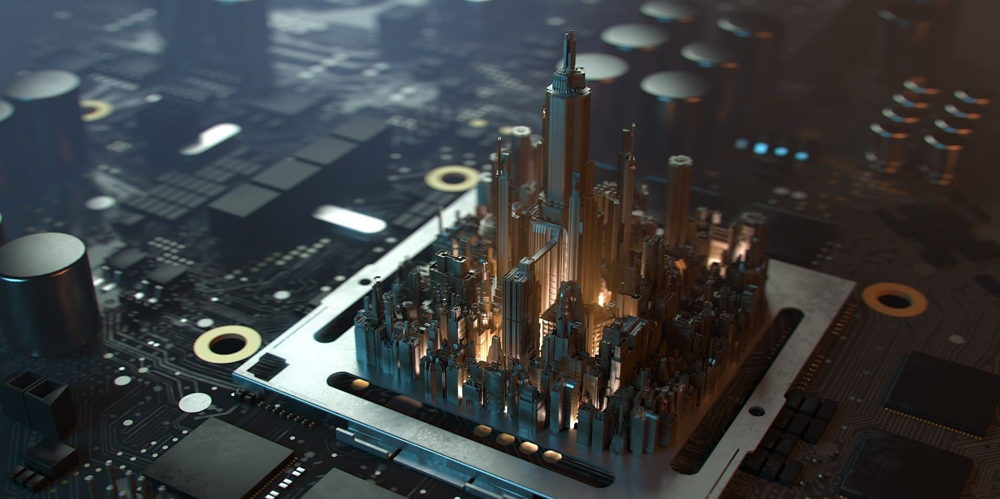
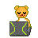

Educate Hoy✍📕
Mis Redes Sociales🔎

Mi facebook🐱👤
Mi instagram
Formulario de contacto
Como Aprendi Sobre el Mundo de la Compuntacion en el sector de Hardware
Esta web fue creada con el proposito de informar sobre mi vida personal y aportar mis conocimientos a la comunidad Todo comenzo la edad de 8 años mi papa llevo una pc a la casa desde hay empezo mi amor por el computo cuando vi esos juego de nitendo 64 mario kart etc, verdaderos clasicos por mas de 9 años fui teniendo pc mas avanzadas y mas nuevas y me fui interesando el mundo de hardware, por lo tanto los ultimos años me fui mas centrando en el hardware, busca de fallas, malas configuraciones en bios, optimizacion hasta incluso Overclok que es una proctica o deporte de mostrar todo el potencial de Cpu o el procesador este consiste en aumentar la frecuencia del mismo y luego en la primaria años mas tarde conoci a un compañero que me inspiro, esta web se creo con el proposito de que aprendan a difereniar un hardware de otro.
|